1. Descripción general
Indy Open APRS proporciona una interfaz web para configurar y supervisar un sistema APRS basado en ESP8266 y Nano TNC. Desde ella se administran accesos, red, APRS-IS, estación, mensajes, estado, contactos, actualizaciones, respaldos y diagnóstico.
AP local y credenciales OTA.
Red, APRS-IS, estación, TNC y telemetría.
Mensajería APRS por RF o Internet.
Diagnóstico, sensores y RF.
2. Arquitectura del sistema
El ESP8266 ejecuta Indy Open APRS. La Nano TNC utiliza firmware independiente y atiende la comunicación APRS por RF mediante TNC/KISS.
3. Accesos y seguridad
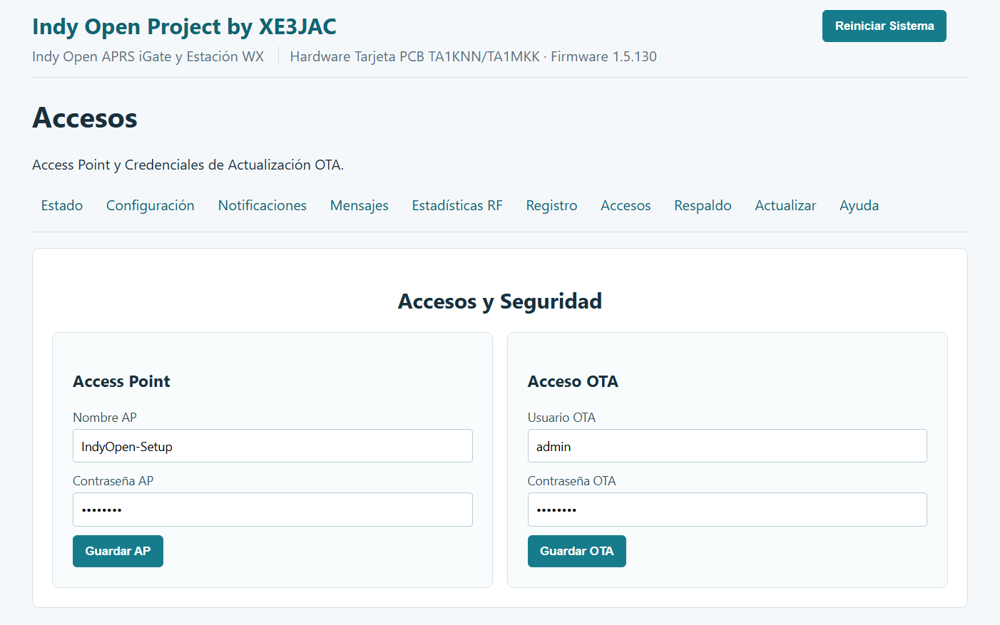
Permite configurar el nombre y contraseña del AP local, además del usuario y contraseña utilizados para operaciones OTA.
Credenciales predeterminadas
| Acceso | Usuario / SSID | Contraseña |
|---|---|---|
| Acceso OTA | admin | indygate |
| Wi-Fi / Access Point | admin | indygate |
4. Configuración general
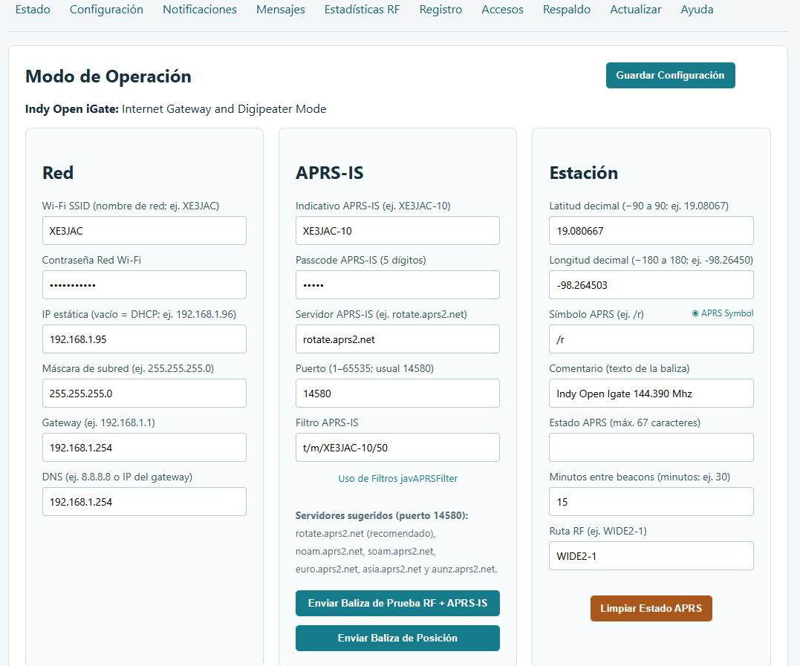
Modo de operación
Determina la función principal del equipo: iGate, Digipeater o Tracker según la versión instalada.
Red
Wi-Fi SSID, contraseña, DHCP/IP estática, máscara, gateway y DNS.
APRS-IS
Indicativo, passcode, servidor, puerto y filtro APRS-IS.
Estación
Latitud, longitud, símbolo, comentario, estado, intervalo de baliza y ruta RF.
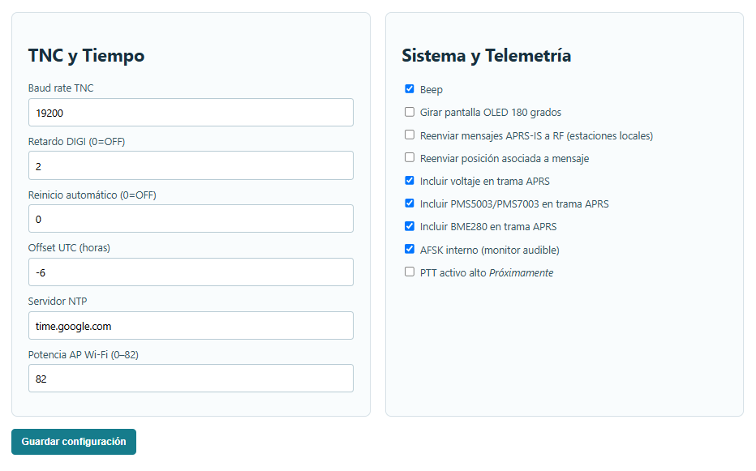
TNC y tiempo
Baud rate TNC, retardo DIGI, reinicio automático, UTC, NTP y potencia del AP.
Telemetría
Incluye opciones relacionadas con beep, OLED, reenvío APRS-IS → RF, voltaje y sensores.
5. Mensajes APRS
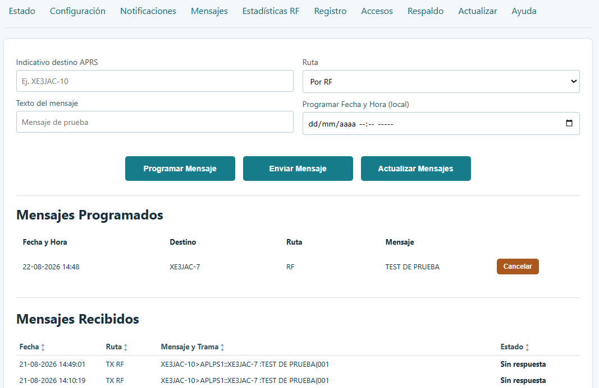
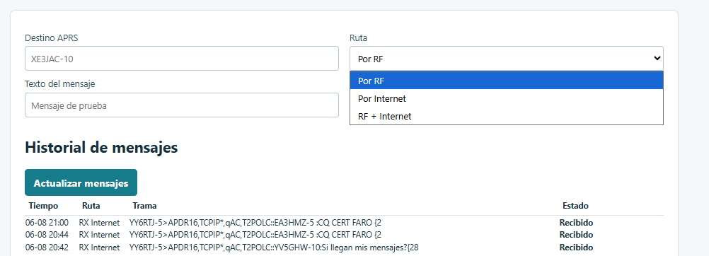
- Introduzca el destino.
- Escriba el mensaje.
- Seleccione RF, Internet o RF + Internet.
- Pulse Enviar mensaje.
- Revise el historial.
6. Estado y contactos
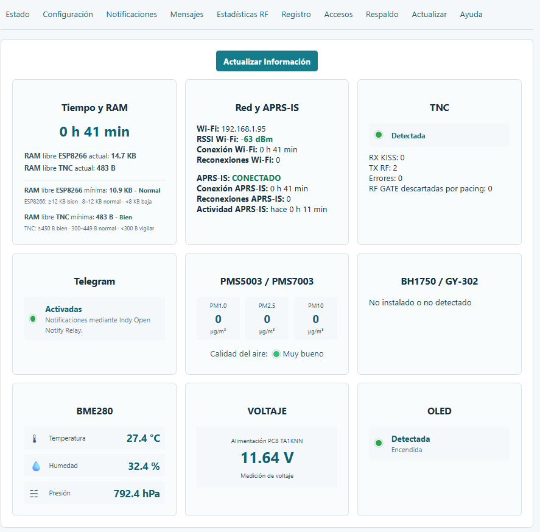
La pantalla muestra tiempo encendido, red, APRS-IS, TNC/KISS, RX/TX RF, sensores, voltaje y OLED.
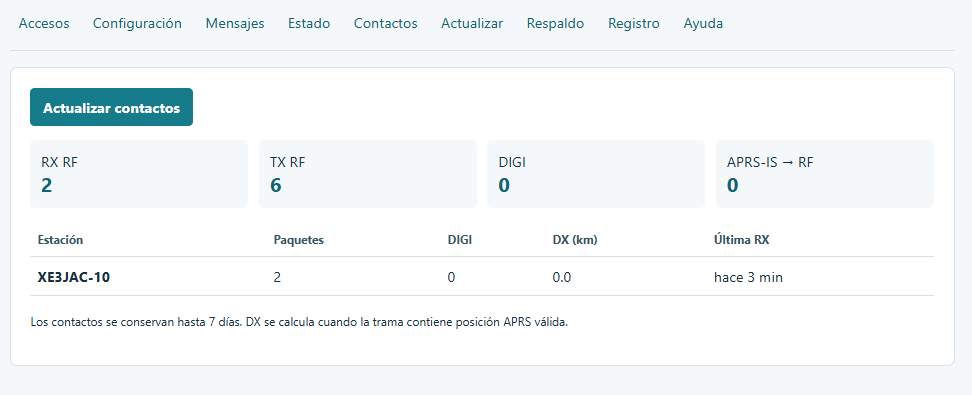
Contactos resume actividad RF reciente y estaciones recibidas.
7. Actualización OTA
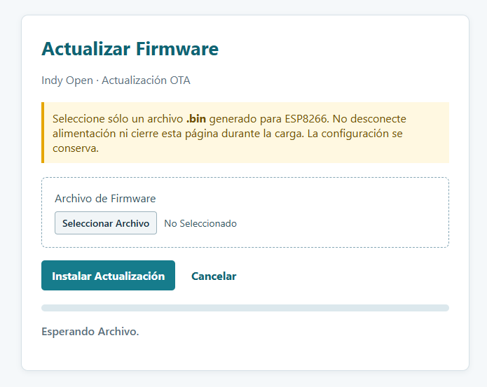
Seleccione un archivo .bin creado para el ESP8266, inicie la actualización y espere a que termine.
8. Respaldo y restauración
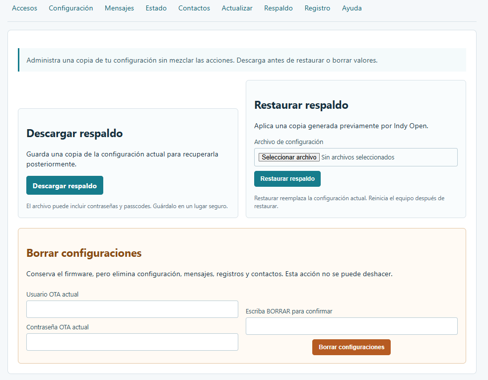
Permite descargar la configuración, restaurar un respaldo o borrar configuraciones conservando el firmware.
9. Registro
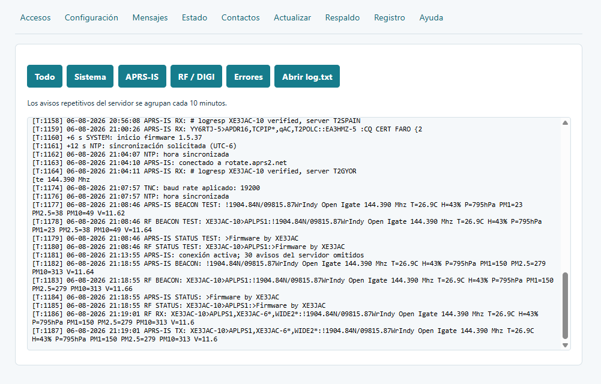
Los filtros de diagnóstico incluyen Todo, Sistema, APRS-IS, RF / DIGI y Errores. También puede consultarse log.txt.
10. Pantalla OLED
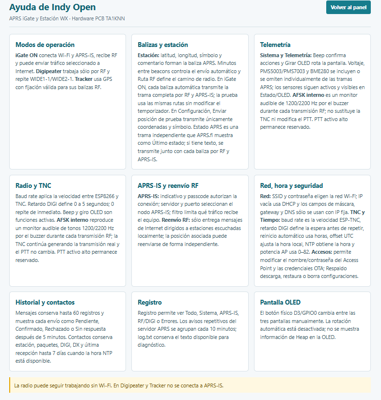
La OLED utilizada es de 0.96 pulgadas y 128×64 píxeles. Las tres vistas operativas son fijas y se cambia entre ellas pulsando el switch o botón físico del sistema.
- Vista de sistema e iGate.
- Vista TNC/KISS y RF.
- Vista de sensores y estado I2C/OLED.
También puede mostrarse un bitmap monocromático 128×64 como pantalla de inicio.
11. Instalación inicial por USB
- Conecte el ESP8266 mediante un cable USB de datos.
- Identifique el puerto serie.
- Seleccione el firmware correcto.
- Inicie la programación.
- Espere la confirmación.
- Reinicie y realice la configuración inicial usando las credenciales predeterminadas
admin/indygate.
12. Nano TNC basada en ATmega
La Nano TNC es independiente del firmware Indy Open del ESP8266. Debe programarse con su firmware específico.
- Conecte la Nano por USB.
- Identifique el puerto.
- Confirme ATmega/bootloader.
- Cargue el firmware TNC.
- Espere la verificación.
- Reconecte la Nano al sistema.
- Compruebe TNC/KISS desde Indy Open APRS.
La publicación histórica del proyecto acredita el firmware TNC a SQ9MDD.
13. Instalación mediante Web Flasher
El Web Flasher permite instalar el firmware del ESP8266 desde un navegador compatible utilizando USB.
- Conecte el ESP8266.
- Abra el Web Flasher.
- Autorice el acceso al puerto serie.
- Seleccione el puerto.
- Seleccione la versión correspondiente.
- Inicie la instalación.
- Espere al 100 %.
- Reinicie el equipo.
| Método | Conexión | Uso |
|---|---|---|
| Web Flasher | USB | Primera instalación o recuperación |
| OTA | Red | Actualización de un equipo ya operativo |
| USB tradicional | USB | Programación manual |
14. Historia y créditos
Indy Open APRS utiliza como plataforma física de referencia la PCB TA1KNN. El firmware Indy Open APRS es un desarrollo posterior para el ESP8266.
| Elemento | Autor / referencia |
|---|---|
| PCB / hardware | TA1KNN |
| Firmware TNC | SQ9MDD |
| Firmware actual | Indy Open APRS / XE3JAC |
Se recomienda conservar las licencias, avisos y créditos que acompañen cualquier componente de terceros que se distribuya con el proyecto.
15. Recomendaciones
- Configure accesos y red antes de operar.
- Cambie las credenciales predeterminadas
admin/indygatedespués de la primera configuración. - Verifique el modo de operación.
- Compruebe indicativo, posición y ruta RF.
- Use Estado y Registro para diagnóstico.
- Realice un respaldo de una configuración estable.
- Mantenga alimentación estable durante OTA y Web Flasher.
- No mezcle el firmware del ESP8266 con el de la Nano TNC.